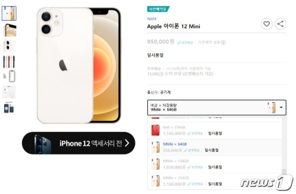

출시일 '긴 줄' 대신 '서버대기열' 진풍경…아이폰12 2차 예판도 '광풍'
10% 내외 할인제공한 e커머스 10~30분 매진…서버다운도
통신사 예판도 호조…"그래파이트, 화이트 색상 특히 인기"
아이폰12미니·프로 맥스를 사전판매한 온라인 커머스에서는 사전판매가 시작된지 10~30분만에 연이어 제품들이 품절됐다.(쿠팡 갈무리)© 뉴스1
(서울=뉴스1) 김정현 기자,송화연 기자 = 애플이 13일 오전 0시. 아이폰12 시리즈의 두번재 예약판매를 시작했다. 이번 '아이폰12미니·프로 맥스' 예약판매 역시 지난번 '아이폰12·프로' 예약판매 못지않은 광풍이 불었다.
지난달 아이폰12·프로 예약판매에 이어 두번째로 마련된 아이폰12·프로맥스의 예약판매는 T다이렉트샵·KT샵·U샵 등 이동통신3사의 온라인 직영몰과 쿠팡·11번가·위메프·롯데하이마트온라인쇼핑몰 등 온라인 커머스 등에서 진행됐다.
또 이번 아이폰12미니·프로맥스 예판에는 카카오 커머스도 참전한 것이 눈에 띄었다. '카카오 선물하기'에서도 아이폰12 시리즈를 사전구매할 수 있었다.
이번 아이폰12미니·프로맥스 예판에는 카카오 커머스도 참전한 것이 눈에 띄었다. (카카오 선물하기 갈무리) © 뉴스1
◇신제품 출시일 '긴 줄', 이제는 '서버대기열'로 이동
온라인 사전판매 모습에서 그동안 아이폰 신제품 출시일에 길게 줄을 늘어섰던 모습들이 온라인으로 이동한 사실을 알 수 있었다.
이번 사전판매에는 아이폰12 시리즈 중 가장 작은 사이즈의 '아이폰12미니'와 가장 크고 높은 사양의 '아이폰12프로 맥스' 두가지 제품이 판매됐다.
아이폰12 프로맥스 출시가격은 Δ128기가바이트(GB) 모델 147만4000원 Δ256GB 모델 160만6000원 Δ512GB 모델 187만원이다. 아이폰12 미니는 Δ64GB 94만6000원 Δ128GB 모델 101만2000원 Δ256GB 모델 115만5000원이다. 모두 부가세를 포함한 가격이다.
10% 내외의 할인혜택을 제공하며 자급제 모델을 판매한 대부분의 온라인 커머스에서는 사전판매가 시작된지 10~30분만에 연이어 제품들이 품절됐다. 일부 쇼핑몰에서는 구매자들이 몰려 서버가 다운되는 경우도 있었다. 쿠팡에서는 결제 페이지 쪽에서 오류가 발생해 약 30분간 대부분의 구매자들이 제품 결제를 진행할 수 없었던 일도 발생했다.
13일 오전 8시 기준 일부 쇼핑몰에서는 아이폰12미니 블루·64기가바이트(GB) 모델 등 비인기 용량·색상 모델은 재고가 남아있었지만, 그나마도 결국 매진됐다.
(KT 제공) © 뉴스1
◇"12프로맥스, 남성 선호, 12미니, 남녀비율 비슷"…이통사 사전판매도 호조
이동통신사 직영 온라인몰의 아이폰12미니·프로맥스 사전판매도 호조를 보였다.
KT샵은 아이폰12미니·프로맥스 개통이 시작되는 오는 20일 오전 0시부터 배송하는 '1시간 배송' 서비스를 제공하기로 한 선착순 2000대는 1시간여 만에 완판됐다.
KT 측은 "아이폰12프로맥스에서는 그래파이트 색상 선택 비율이 37% 수준으로 가장 많아, 아이폰12 프로 때 퍼시픽 블루가 1위였던 것과는 양상이 달랐다"며 "아이폰12미니에서는 화이트 색상을 선택한 사람이 41%로 가장 많았다"고 밝혔다.
또 KT에서 아이폰12프로 맥스를 사전구매한 사람의 74%가 남성인 점도 눈에 띄었다. 아이폰12미니는 사전구매자의 남녀 비율이 48:52로 큰 차이가 없었다.
SK텔레콤 T다이렉트샵 역시 아이폰12미니·프로맥스 판매의 1차 사전판매가 2시간도 되지 않아 마감됐고, 2차 사전판매를 진행하는 등 비슷한 분위기를 보였다.
SK텔레콤은 "아이폰12프로 맥스, 아이폰12 미니 두 제품의 인기는 비슷한 수준"이라고 설며앴다.
LG유플러스 측은 "유샵에서 진행된 이번 아이폰12미니·프로맥스 사전판매량은 지난달 아이폰12·프로 사전판매량보다는 약간 적은 수준이지만 둘을 합하면 지난해 아이폰11보다 뜨거운 인기를 보이고 있다"고 밝혔다.
Kris@news1.kr
▶ 네이버 메인에서 [뉴스1] 구독하기!
▶ 뉴스1 바로가기 ▶ 코로나19 뉴스
© 뉴스1코리아(news1.kr), 무단 전재 및 재배포 금지
통신사 예판도 호조…"그래파이트, 화이트 색상 특히 인기"

원본보기
(서울=뉴스1) 김정현 기자,송화연 기자 = 애플이 13일 오전 0시. 아이폰12 시리즈의 두번재 예약판매를 시작했다. 이번 '아이폰12미니·프로 맥스' 예약판매 역시 지난번 '아이폰12·프로' 예약판매 못지않은 광풍이 불었다.
지난달 아이폰12·프로 예약판매에 이어 두번째로 마련된 아이폰12·프로맥스의 예약판매는 T다이렉트샵·KT샵·U샵 등 이동통신3사의 온라인 직영몰과 쿠팡·11번가·위메프·롯데하이마트온라인쇼핑몰 등 온라인 커머스 등에서 진행됐다.
또 이번 아이폰12미니·프로맥스 예판에는 카카오 커머스도 참전한 것이 눈에 띄었다. '카카오 선물하기'에서도 아이폰12 시리즈를 사전구매할 수 있었다.
원본보기
◇신제품 출시일 '긴 줄', 이제는 '서버대기열'로 이동
온라인 사전판매 모습에서 그동안 아이폰 신제품 출시일에 길게 줄을 늘어섰던 모습들이 온라인으로 이동한 사실을 알 수 있었다.
이번 사전판매에는 아이폰12 시리즈 중 가장 작은 사이즈의 '아이폰12미니'와 가장 크고 높은 사양의 '아이폰12프로 맥스' 두가지 제품이 판매됐다.
아이폰12 프로맥스 출시가격은 Δ128기가바이트(GB) 모델 147만4000원 Δ256GB 모델 160만6000원 Δ512GB 모델 187만원이다. 아이폰12 미니는 Δ64GB 94만6000원 Δ128GB 모델 101만2000원 Δ256GB 모델 115만5000원이다. 모두 부가세를 포함한 가격이다.
10% 내외의 할인혜택을 제공하며 자급제 모델을 판매한 대부분의 온라인 커머스에서는 사전판매가 시작된지 10~30분만에 연이어 제품들이 품절됐다. 일부 쇼핑몰에서는 구매자들이 몰려 서버가 다운되는 경우도 있었다. 쿠팡에서는 결제 페이지 쪽에서 오류가 발생해 약 30분간 대부분의 구매자들이 제품 결제를 진행할 수 없었던 일도 발생했다.
13일 오전 8시 기준 일부 쇼핑몰에서는 아이폰12미니 블루·64기가바이트(GB) 모델 등 비인기 용량·색상 모델은 재고가 남아있었지만, 그나마도 결국 매진됐다.
원본보기
◇"12프로맥스, 남성 선호, 12미니, 남녀비율 비슷"…이통사 사전판매도 호조
이동통신사 직영 온라인몰의 아이폰12미니·프로맥스 사전판매도 호조를 보였다.
KT샵은 아이폰12미니·프로맥스 개통이 시작되는 오는 20일 오전 0시부터 배송하는 '1시간 배송' 서비스를 제공하기로 한 선착순 2000대는 1시간여 만에 완판됐다.
KT 측은 "아이폰12프로맥스에서는 그래파이트 색상 선택 비율이 37% 수준으로 가장 많아, 아이폰12 프로 때 퍼시픽 블루가 1위였던 것과는 양상이 달랐다"며 "아이폰12미니에서는 화이트 색상을 선택한 사람이 41%로 가장 많았다"고 밝혔다.
또 KT에서 아이폰12프로 맥스를 사전구매한 사람의 74%가 남성인 점도 눈에 띄었다. 아이폰12미니는 사전구매자의 남녀 비율이 48:52로 큰 차이가 없었다.
SK텔레콤 T다이렉트샵 역시 아이폰12미니·프로맥스 판매의 1차 사전판매가 2시간도 되지 않아 마감됐고, 2차 사전판매를 진행하는 등 비슷한 분위기를 보였다.
SK텔레콤은 "아이폰12프로 맥스, 아이폰12 미니 두 제품의 인기는 비슷한 수준"이라고 설며앴다.
LG유플러스 측은 "유샵에서 진행된 이번 아이폰12미니·프로맥스 사전판매량은 지난달 아이폰12·프로 사전판매량보다는 약간 적은 수준이지만 둘을 합하면 지난해 아이폰11보다 뜨거운 인기를 보이고 있다"고 밝혔다.
Kris@news1.kr
▶ 네이버 메인에서 [뉴스1] 구독하기!
▶ 뉴스1 바로가기 ▶ 코로나19 뉴스
© 뉴스1코리아(news1.kr), 무단 전재 및 재배포 금지
이 기사는 언론사에서 IT
섹션으로 분류했습니다.
기사 섹션 분류 안내
기사의 섹션 정보는 해당 언론사의 분류를 따르고 있습니다. 언론사는 개별 기사를 2개 이상 섹션으로 중복 분류할 수 있습니다.
닫기